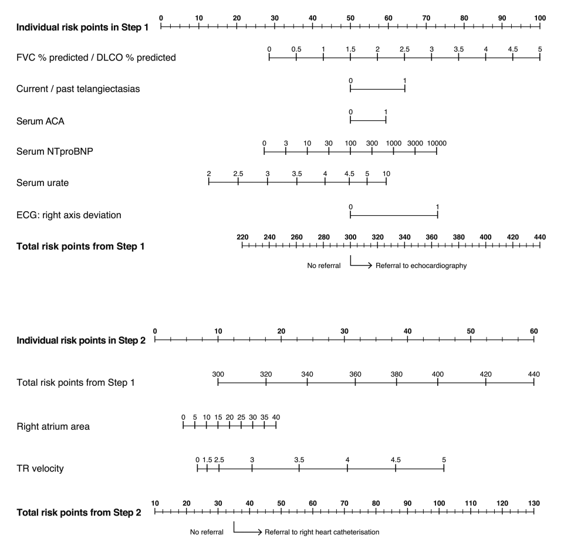

Évaluation clinique
Laboratoire d'hémodynamique bêta
Comprendre l'hypertension pulmonaire
Bougez les curseurs ou choisissez un cas : le schéma, les pressions et l'échographie se mettent à jour. Une seule équation résume tout :
PAPm = PAPO + RVP × DC
Version bêta, à visée pédagogique : contenu en cours de relecture, ne pas utiliser pour une décision clinique.
La pression dans l'artère pulmonaire (PAPm) monte si la pression gauche remonte (PAPO), si les artérioles résistent (RVP) ou si le débit augmente (DC).
Simulateur
Glisser pour tourner · molette ou pincement pour zoomer
--
- GTP (PAPm − PAPO)
- --
Ce que verrait l'échographie (estimations)
- PAPs
- --
- POD
- --
- Vmax IT
- --
- Surface OD
- --
--
Mécanismes des 5 groupes
Du mécanisme au score DETECT
Chaque variable du score repère une étape de la cascade de l'HTAP de la sclérodermie.
Quiz : quel groupe, quel profil ?
Références
Humbert M, Kovacs G, Hoeper MM, et al. 2022 ESC/ERS Guidelines for the diagnosis and treatment of pulmonary hypertension. Eur Heart J 2022;43:3618–3731.
PAPs → PAPmChemla D, Castelain V, Humbert M, et al. New formula for predicting mean pulmonary artery pressure using systolic pulmonary artery pressure. Chest 2004;126:1313–1317.
Modèle volontairement simplifié, à visée pédagogique. La POD, la PAPs, la Vmax IT et la surface OD sont des estimations illustratives, à ne pas utiliser en clinique.
Source du calcul
L'algorithme DETECT est basé sur le nomogramme validé dans l'étude princeps.

Coghlan JG, Denton CP, Grünig E, et al. Evidence-based detection of pulmonary arterial hypertension in systemic sclerosis: the DETECT study. Ann Rheum Dis 2014;73:1340–1349.
Ce calculateur reproduit les points attribués par ce nomogramme, en se basant sur l'article princeps.